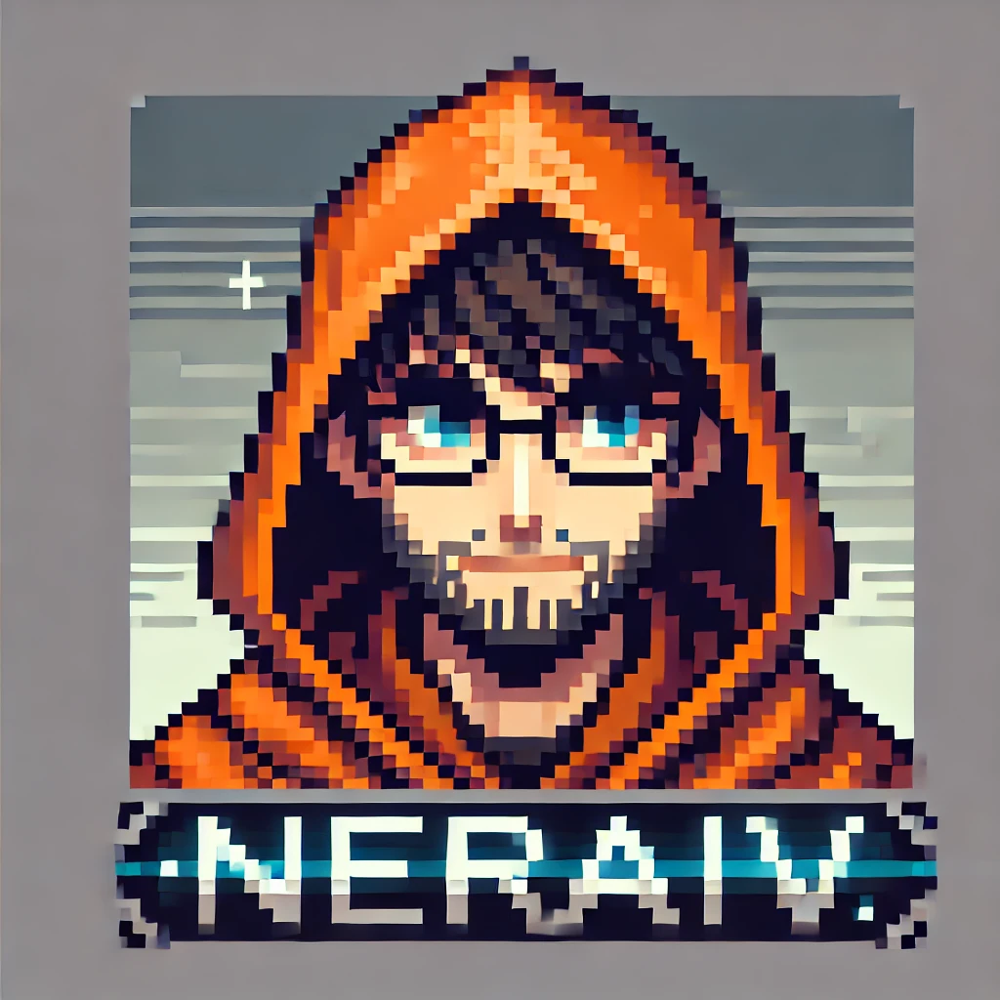
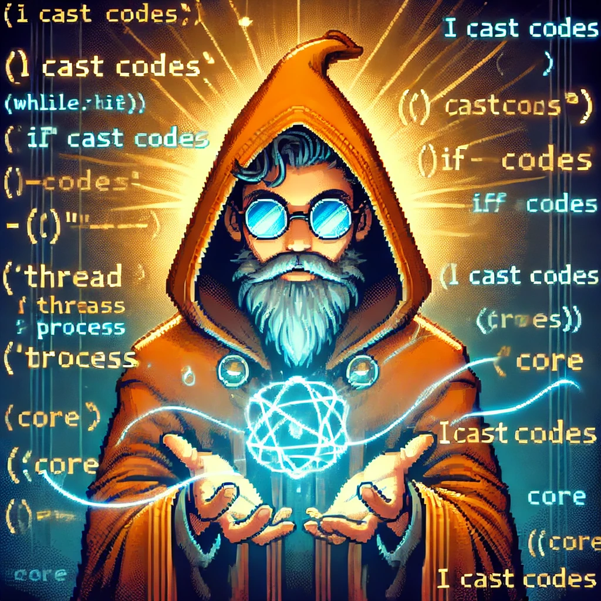

DS18BXX Library
STM32 HAL library for using OneWire devices.
| Features |
|---|
| - Read and convert sensor data. |
| - Read sensor status. |
Hello! I'm Yiğit 'Neraiv' Şirin, an aspiring Mechatronics Engineer based in Turkey. I am currently working at Nokta Detectors, Tuzla, İstanbul. My focus is on mastering data analysis, robotics, and software development.
Download CV

I am an experienced Mechatronics Engineer with a passion for technology and design. I am currently working at Nokta Detectors, Tuzla, İstanbul. I focus on mastering data analysis, robotics, and software development. I am always looking for opportunities to improve my skills and share my knowledge with others. I love role-playing games, especially MMORPGs. I am interested in most software types.

STM32 HAL library for using OneWire devices.
| Features |
|---|
| - Read and convert sensor data. |
| - Read sensor status. |
STM32 HAL library for using OneWire devices.
| Features |
|---|
| - OneWire search. |
| - CRC8 implemented. |
ROS package for simulating a simple autonomous car.
| Features |
|---|
| - Simulation environment in Gazebo Classic |
STM32 library for controlling MyActuator motors.
| Features |
|---|
| - Communicate over CAN bus |
| - Read full motor parameters. |
| - Control motor parameters |
| - Works with multiple CAN buses and multiple motors. |
| - Error function. |
STM32 and Python library for easy serial communication and I/O control.
| Features |
|---|
| - Supports multiple communication interfaces. |
| - Direct connection with pins. |
Arduino library for managing WiFi connections on ESP32 and ESP8266.
| Features |
|---|
| - Auto search. |
| - Initialize and forget. |
RPG Tabletop game. Create your session, run your server, register your game online, and enjoy.
| Features |
|---|
| - Self-hosted server |
| - Online game registration (planned/implemented) |
Worked as a digital signal processing engineer on different kinds of VLF metal detectors. Developed many end-user and manufacturing-related programs, data analysis tools, and studied many magnetic field technology-related papers and patents.
Worked on both electronic and software projects.
Participated in an on-the-job engineering education program during my 4th year of university, open to the top 10 students.
Worked on electronic projects.
Part of an autonomous electric car project (TÜBİTAK and Teknofest project), as a software team member and then software team lead.
Designed my first PCB board with Altium for calculating the speed of an autonomous car using Hall sensors and sending data via CAN bus.
Designed the CAN bus network in an autonomous car for controlling system boards (battery management system, tachometer, and RF communication unit) from the main control unit.
Designed an environment for an autonomous car race containing traffic signs, traffic lights (via Blueprints), barriers, and crosswalks.
Designed a simple shooter game where an NPC follows you and detonates if it gets near the player, and the player tries to escape and shoot it.
Designed a simple light driver card aiming to control the front, rear, and brake lights of a car from an MCU. Used relays, voltage converters, and simple MCU protection circuits.
Designed a BMS using STM32F103 to monitor cell voltage, balance cells, track battery temperature, and state-of-charge parameters to enhance battery lifetime. Used a bi-directional MOSFET capacitor topology.
Implemented object detection using TensorFlow with an Intel RealSense camera in a ROS environment for detecting traffic signs. Processed images with OpenCV, trained a model on 60,000 images, and developed an algorithm to determine object count, position, and distance. Applied signal processing techniques like Gaussian filtering to refine depth data for path planning integration.
Developed an area scanning algorithm using an RPLIDAR sensor for obstacle detection and distance measurement. Processed 720 filtered data points (representing a 360° scan) by dividing them into five segments and created a LaserScan node to relay object distances to the path planning module in ROS.
Designed a control board that communicates with the ROS Brain Node (UART) and other embedded cards (CAN bus). Faced challenges including communication latency, stability, and performance of each unit.
Developed a decision-making algorithm using LIDAR to track cones instead of lane detection. Integrated data from object detection and LIDAR nodes, filtering it through a large flowchart to generate motor commands. Placed 5th in the competition, but a vision processing error caused a misinterpretation, leading to a collision.
Developed a traffic light plugin to meet competition pre-qualification requirements. Created two versions: one to change light colors and another to swap red and green light positions. While simple in Unreal Engine 4, implementing it in Gazebo was significantly more complex.
Developed a DS18BXX library for STM32, as no existing support was available. Created it for use in competitions and by university teams, marking my first contribution to GitHub.
Developed a OneWire library for STM32, as no existing support was available. Implemented every OneWire method.
Integrated an electronic compass to verify vehicle orientation, processing roll, pitch, yaw, and acceleration data. Used an FIR filter (discovered later) to reduce noise and implemented a system to validate turning status.
Developed simple code to read and map values like potentiometer data from a 10-channel remote. Used it to control the vehicle remotely.
Replaced the onboard laptop with an NVIDIA Jetson AGX Xavier for AI processing, which significantly improved our inference times (and the safety of our personal laptops :)). Developed four ROS nodes: Camera node, Lidar node, Path Planning node, and Communication node. Used Xavier's built-in UART and CAN bus interfaces instead of USB-to-TTL converters, which reduced system complexity and increased stability.
Developed a lane tracking algorithm using the Hough Transform. Filtered images using techniques like masking, cropping, and Canny edge detection. Calculated slope differences and intersection points to determine steering angle and turning speed.
Developed a mobile control interface as a side project during my thesis. Implemented a joystick and used Firebase for real-time vehicle control and to track vehicle status.
Developed a library to store multiple networks and automatically connect to the strongest signal, enabling seamless remote control for moving robots. Published the code on GitHub.
Developed a computer vision algorithm for quality control, matching product names with barcodes. Improved processing speed by 17% using AI-based text recognition. Created Java and C# interfaces to log tyre conditions, ensuring seamless integration with the IT department's database.
Designed a low-cost network system using ESP modules to streamline calibration processes. Developed three codes: Server for data transmission, Client for data reception, and ClientNextion for an operator-friendly Nextion screen interface. Enabled fast calibration data collection and network-wide updates.
Developed an STM32 library for controlling MyActuator motors via CAN bus. Enabled full motor data retrieval and PID-based speed, torque, and angle control. Published the library on GitHub.
Developed a system to transfer STM32 data to an ESP module via Software SPI, as ESP32 lacked hardware SPI pins. Connected the ESP module to the internet via Ethernet and stored the data in a Firebase database.
Developed an Android app for a medical robot that collects patient training data and transmits it via Bluetooth to STM32 software for communication with the app and vice versa.
Redesigned a prototype robot's control system using a Unified Robot Description Format (URDF) and configured its controllers. Developed a demo program in MoveIt2 for forward and inverse kinematics analysis tests.
Helped design a hand controller circuit which uses nRF to communicate with other circuits and a Bluetooth module to communicate with a PC, using an ATmega328p as the microprocessor.
Developed two projects to understand signal processing before working on lane detection: 1) A painting project tracking masked colors for air drawing. 2) A PDF scanner detecting paper edges and using image warping to flatten documents.
Designed an air conditioning system using Fuzzy Logic with a colleague. Developed a fuzzy map that adjusts fan speed based on temperature and humidity readings in an embedded system.
Developed a graphical LCD simulator in Qt to test our software and make it testable by our testers.
Designed detector coils in FreeCAD and tested their magnetic field effects in different environments using Elmer FEM.
Designed a Pygame UI to test different animations as they would appear on an embedded system, pixel by pixel. Applied rotation animations and anti-aliasing filters.
Created software which reads many channels and displays their processed data in the UI while processing the data. Used threads and an FPS limiting algorithm to enhance performance.
Created a PyQt plugin system to add different features to a graphical user interface or analysis tools for more modular and quickly updatable scripts.
Created a ROS package for the simulation of an autonomous car which contains a massive test area, traffic lights, a YOLOv5 model to detect signs, and a simple lane tracking algorithm. Published on GitHub.
Developed the Python and STM32 sides of a communication protocol where you can easily assign pins for analog and digital data acquisition. It aimed to help lower-year students. Published on GitHub.
This project has been my first JavaScript project. I am still continuing to develop this game. The project is hosted by one user, and other players can join via direct IP address or by using another website I host, which connects the server address to a game ID. Everything happens through this central server. The server-side is built with Flask; the database uses JSON and CSV files for now. No JavaScript libraries like React or Next.js are used; it's pure JavaScript. There are many details about this game, so please check my GitHub if you are interested in this role-playing fantasy game.
Designed register analyzer software which displays changes from a log file's definitions bit-by-bit according to a datasheet. This helps to easily analyze old and new register settings.
Created a digital signal processing library which uses packages like NumPy, SciPy, Pandas, and Matplotlib for visualizing. This library contains frequency analysis, many signal operations (like applying filters, resampling signals, filter creation, demodulation), simulating data, reading and saving data (CSV, Excel), FFT analysis, data file management, real-time data processing functions, and many plotting functions. Became my first pip project.
Built a simple line tracking car model using LDR sensors. When I started this project, I thought to myself, 'Am I really working on a prototype model car, as if I haven't been working on a rideable vehicle for the past two years?'.
This portfolio page itself.